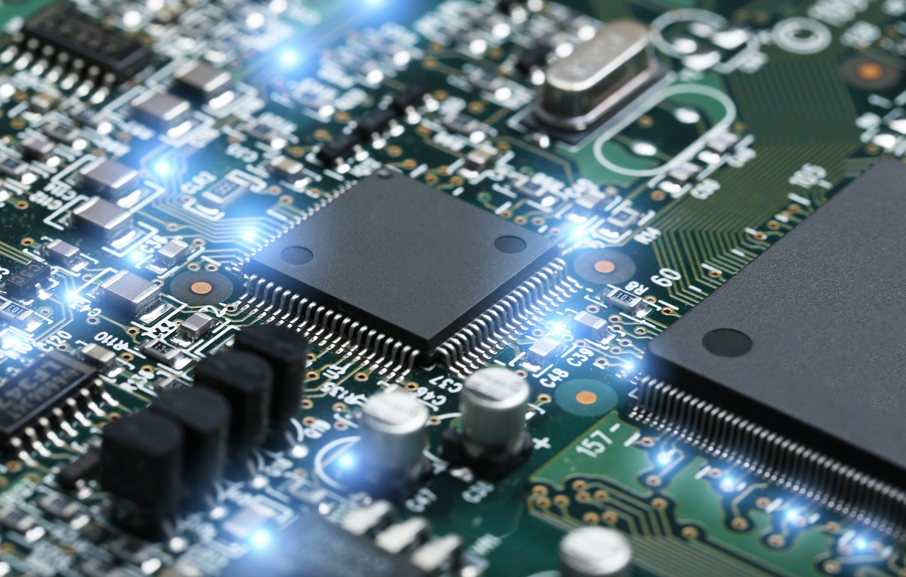

Electronics and Communications Engineering involves researching, designing, developing, and testing of electronic equipment used in various systems. ECE also conceptualize and oversee the manufacturing of communications and broadcast systems.This stream of engineering deals with analog transmission, basic electronics, microprocessors, solid-state devices, digital and analog communication, analog integrated circuits, microwave engineering, satellite communication, antennae, and wave progression. It also deals with the manufacturing of electronic devices, circuits, and communications equipment.
